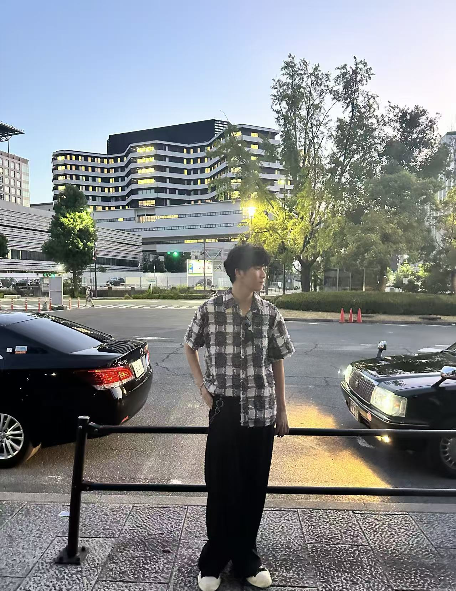

乐于沟通，把候选人关系维护成长期联系；新岗位、新行业会主动补知识、拆问题。
我做事的方式
把岗位信息拆成可搜索的画像、关键词、竞对团队和触达理由，让招聘动作从“找人”变成“有依据地推进”。
结合简历、论文、项目经历和候选人反馈判断匹配度，把“为什么合适”说清楚。
把 Mapping 表、候选人标签、沟通节点、面试反馈和后续动作记清楚，让下一步更明确。
目标方向
我想走的是高端岗位判断、技术人才理解和人力 AI：先把人和岗位看准，再把招聘、人力运营里每天反复卡住的地方整理得更顺手。
先把判断标准说清楚，再决定该找谁、怎么聊、往哪推。
教育背景
实习经历
百度 · 国际事业部｜海外 AI Native 招聘实习生
2026.10 - 至今
以 FDE 模式推进 HR 业务侧 AI Agent 落地：拆解海外产研岗位招聘全流程、输出标准化 SOP，设计 Agent 工作流与提示词体系，探索 AI 在人力场景中的运用；同步支持新加坡、香港、日本产研岗招聘。
智谱华章｜HRBP 实习生
2026.07 - 2026.10
负责部门 190+ 人团队招聘全流程，独立承担校招生 HR 面试与社招候选人 pre-talk 谈薪，覆盖大模型算法、GUI-Agent、AI 产品经理、前后端、测试等 20+ 方向；累计开源 500+ 份简历，151 人一面、69 人二面、28 个 Offer，协助完成实习生定薪与 Offer 审批。
快手科技｜技术招聘实习生
2026.04 - 2026.07
参与可灵 AI 音频智能中心与数据智能中心相关岗位寻访，围绕竞对团队、论文线索和候选人画像开展 Mapping，支持触达、面试推进与 Offer 协同。
华润保险经纪｜人力资源及行政部助理
2025.10 - 2026.04
参与 6 个月招聘全流程，覆盖岗位发布、简历筛选、面试安排、候选人沟通和数据台账维护。
作品与材料
未来鹅面向大学生成长与招聘方人才观察的 AI 成长陪伴平台。
AI-HR 智能招聘与猎聘系统把招聘需求解析、候选人画像、Talent Mapping 和流程推进放在同一个系统里。
配送关怀 · 外卖延误补偿客服 Agent顾客端查单核验与商家主管审核双端协同，结合确定性规则精算、一单一赔原子锁与 120 次受控评测。
CampusFlow · 校园招聘体验场面向小红书校招现场的扫码演示：三视角工作台、官网原文岗位目录、邮箱直投 HR。
源作 Origin Atlas 视觉决策台编码动工前先锁定配色、字阶与界面气质，生成可复用的视觉方向规范说明。
面试体检 InterviewCheckup招聘效度分析 SaaS：把「面试打分准不准」量化成相关系数 r，只体检、不裁决。
ICBMMC 2025 录用论文第一作者，研究 Naruto Mobile 销售停滞原因，已通过同行评审。
Jonah Berger 教授推荐信来自宾夕法尼亚大学沃顿商学院 Jonah Berger 教授的推荐信。